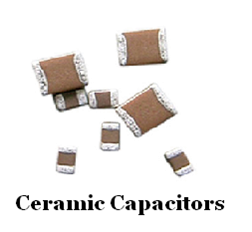

Download this project
The Problem
Manufacturers of ceramic capacitors need to manufacture millions of ceramic capacitors
with the same dimensions and electrical properties as cost efficiently as possible. There
is a need to therefore optimize the manufacturing process to maximize both yield and profit. The
problem is to determine some of the parameters for the manufacturing process.
Areas of Application
- Problem solving
- Basic Arithmetic skills
- Rates and ratios
Explanation of Alignment with Standards
Background Information
In the manufacturing of ceramic capacitors, the process involves many steps, some time
consuming, that need to be controlled. The manufacturing engineers need to develop the
parameters for the most cost effective manufacturing process. The steps involved are:
- Ceramic powder is mixed with an organic binder and cast into tapes (called
greenware) that measure 1m wide by 100m long. These strips of greenware have the
consistency and thickness of an old 5 ¼ inch floppy disk.
- This stacked material is then put through a heating cycle on a continuously
moving conveyor belt through a series of ovens. During the cycle:
- The organic binder is slowly difused through the block, and the remaining
material is then sintered into the hard final ceramic.
- The sintered blocks are cooled slowly back to room temperature
then cut into the final dimensions of the capacitors.
- There is a 16% shrinkage from the original size of the block
during the heating cycle.
Materials Included
Four problems dealing with the heating process and the manufacturing of capacitors:
- Determine the optimal dimensions of the original stacked greenware material placed into the ovens to produce the maximum number of usable capacitors (percentage question).
- Determine the speed of the conveyor belt (rate equation).
- Determine the temperature profile (problem solving, rate conversion, general arthmetic, graphing).
- Determine the maximum number of capacitors that can be produced from the original stacked greenware material (rate conversion, percentage equation).
Download
| To Download: |
| Windows: right-click on the filename above and choose: "Save Target As..." |
| Mac/Apple: hold the CTRL key, click on the filename above, and choose: "Download to Disk..." |